⤓ Download as PDF · property intake form · back to the app
One document, every part of the program:
- BOOK I — OPERATING MANUAL
- BOOK II — PROPERTY ONBOARDING
Cypress Command Platform — Operating Manual (On The Boulevard deployment)
Version September 22, 2026 · covers the 18-sheet production build (777 tests) Live app: https://otb.cypresscommand.com (also orangeoceanatlas.com · otb-command.vercel.app) · Operator: adam@adamabdalla.com
This supersedes the July 2026 text-only edition (docs/pitch/operator-manual.md).
Every screenshot is a real capture of the running system. Tenant names and
dollar figures shown are representative sample data, not actual tenancy or
economics. Part I is orientation, Part II
is the operator's day, Part III covers each sheet in depth, Part IV is the
counterparty guides (owner / vendor / tenant / signer), Part V is the monthly
and periodic rhythms, Part VI is administration and recovery.
Part I — Orientation
1.1 Signing in

There are no passwords. Enter your email on the login screen; a magic link arrives by email; clicking it signs you in. Your role is resolved automatically:
| You are… | How the system knows | You land on |
|---|---|---|
| Operator | adam@adamabdalla.com | Everything |
| Owner | pre-authorized email (see §6.1) | Read-only, operator-chosen sheets |
| Vendor | email matches the vendor roster | V-1 Vendor Portal only |
| Tenant | email in the tenant-contacts list | M-1 Maintenance only, own unit |
| Anyone else | — | A "pending" holding screen; no data |
If a legitimate person lands in pending, the operator promotes them (§6.1).
1.2 The drawing-set metaphor
The left sidebar is a sheet index, like an architect's drawing set:
- D-0 Portfolio — cross-property rollup (one card per property)
- D-1 Dashboard — KPIs, action queue, live cards
- A-1 Site Plan — the interactive plat
- A-2 Spatial — the property workspace (plat model, suite inspector, evidence) + capture lenses
- R-1 Rent Roll · C-1 Compliance · P-1 Financial — money and obligations
- S-1 Owner Safe — sealed document vault + property records
- AI-1 Concierge — the three AI personas
- T-1 Critical Dates · W-1 Action Board — what is due, who is doing it
- K-1 Directory — contacts, document register, pylon sign, site imagery
- B-1 Marketing — flyers, overview, tenant cards, photo library, tour media
- L-1 Comm Log — every letter, e-mail, meeting note and phone call
- N-1 Matters — long-running affairs with deadlines and correspondence
- M-1 Maintenance — work orders (also the tenant's sheet)
- O-1 Operations — the procedures (SOP) library
- V-1 Vendor Portal — vendor roster, COIs, work orders
The masthead carries a KPI ribbon — Occupancy · Rent/mo · Vacant · Expiring ≤12 mo · Needs attention — and each figure is a button that drills into its sheet.
The URL tracks the open sheet (#roll, #plan…) — the back button walks your
history, and links can deep-link a sheet. Boot lands on D-1 (D-0 sits above it
in drawing-set order but is a rollup, not the daily surface).
1.3 The unit drawer — the universal detail surface
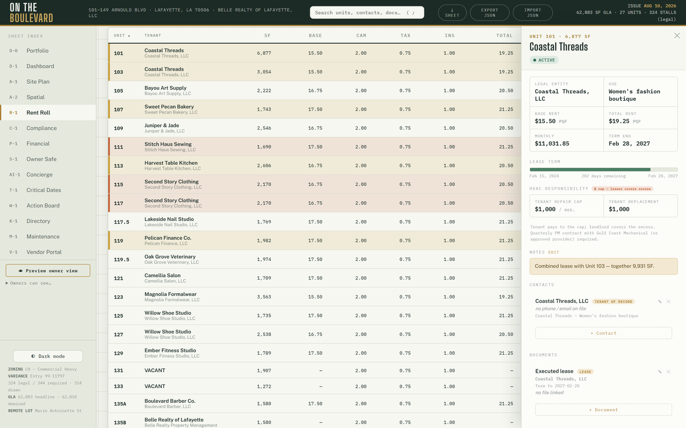
Click any unit anywhere (site plan, rent roll, 3D lens, satellite) and the drawer opens with everything about that unit: term progress, PSF economics, HVAC responsibility, notes, contacts, documents, photos, compliance rows, the Ledger panel, and the E-Sign panel. Most day-to-day work happens here.
1.4 Search and shortcuts
- Press / anywhere → omni-search units, contacts, documents; Enter opens the top hit.
- ⤓ SHEET (topbar) or Ctrl+P → prints the open sheet as a stamped PDF (drawing-set footer, date, headline figures). R-1 is guaranteed one page.
- Export / Import (topbar) → full state snapshot as JSON; Import restores it. This is your portable backup (§6.4).
- Theme toggle (sidebar foot): plan-room (default) ↔ dark. Print always reverts to paper.
1.5 Phones and tablets
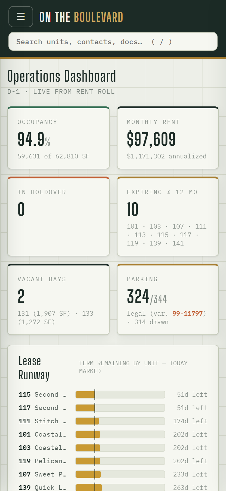
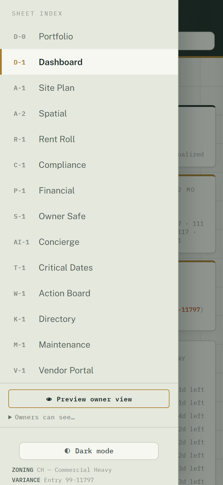
At phone widths the sheet index becomes an off-canvas drawer behind the ☰ button, grids collapse to one column, and the unit drawer goes full-screen. Everything works; nothing is mobile-only.
Part II — The operator's day
A normal day touches five surfaces:
- D-1 Dashboard — scan the KPI row, the live cards, and the Action Queue (§3.2).
- W-1 Action Board — the kanban seeds itself from live facts (holdovers, renewal windows ≤12 months, vacancies, compliance flags, covenant obligations, open work orders). Drag cards between lanes, dismiss what's handled, add custom cards. You never have to remember to create a card for a lease expiring — it appears on its own.
- AI-1 History — the daily automated scan (11:00 UTC) may have opened a thread: a renewal window entered 180 days, a holdover appeared, occupancy dipped, the camera pipeline went quiet, a voice lead never booked, or a payment arrived that couldn't be matched. Each condition opens exactly one thread, ever — if there's nothing new, there's nothing there.
- M-1 Maintenance — new tenant requests (from the portal or the phone line) appear in the queue. Triage per §3.10. 4a. L-1 Comm Log — the "Calls · 7 days" strip and the attention filter: every recorded phone call with its summary, intent and urgency chips; listen, read the turns, then ✓ Mark handled (§3.19).
- Mail/phone → the system — anything that arrived outside the system (a signed lease, a COI, a check conversation) gets recorded where it belongs the same day: SOT update (§5.3), vendor folder (§3.13), ledger entry (§3.11).
Part III — Sheet-by-sheet instructions
3.1 D-0 Portfolio
One card per property you can see: A/R outstanding (sum of positive unit balances over effective ledger entries) and open work orders, with an as-of stamp. "Open →" switches the active property. With a single property the property switcher stays hidden; at two or more it appears in the sidebar (see the onboarding manual). Derived — nothing to maintain here.
3.2 D-1 Dashboard
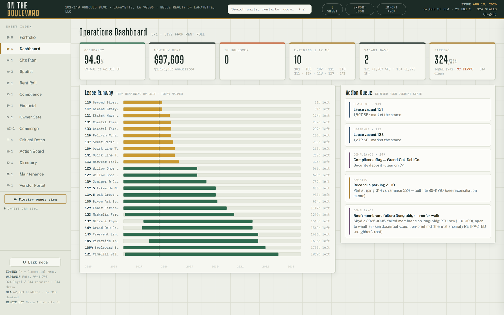
Read-only KPIs derived from live data — nothing to maintain here. Cards: occupancy/rent KPIs, parking variance (from the instruments file, not typed), Parking Occupancy (C3) with 7-day trend (48-hour freshness window; the as-of label shows date+time for non-today samples), Network (UniFi) up/down, Automation (cron) — green with last-run age; brick-red STALE past 26 hours, which matters because maintenance aging, voice leads, C3 heartbeat, UniFi, rent posting, and the owner brief all ride that one daily cron — Client Errors (24h) (renders only when the count is nonzero), the Calls KPI (recorded voice calls awaiting attention), and the Action Queue (same cards as W-1). If a card shows brick-red, it is telling you something needs attention.
3.3 A-1 Site Plan
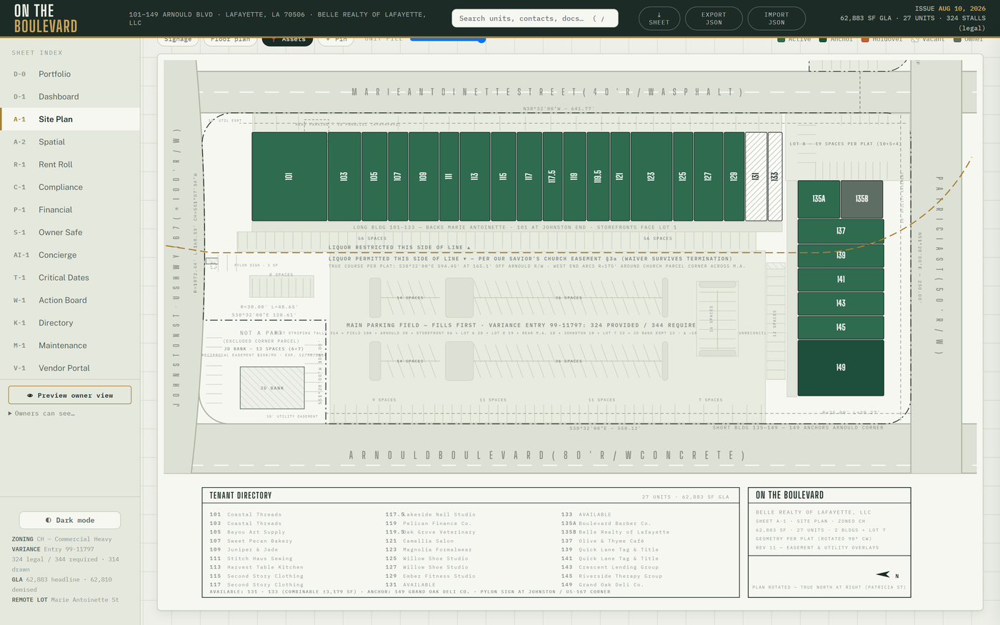
The recorded plat, interactive. A View row above the chips sets a preset
— Leasing · Daily Ops · Building Systems · Common Areas · Signage · Roof ·
Site / Hardscape — and the chips re-derive from it; toggling any chip by hand
drops the preset highlight. Chips toggle overlay layers:
- Lenses: Status / Expiry / Rent / Use / HVAC / Size — unit fills + legend.
- 🅿 Parking — the 314 plat-labeled stalls by zone, plus the 10-stall Johnston
row the CAD stripes but the plat never labels (marked as such).
- ⇆ Access — ingress/egress as built: every curb cut drawn as an apron with its
throat width, two-way arrow pairs at the cuts and along the aisles, the Arnould
raised median and its one 55' opening (Driveway A is the only full-movement cut),
edge-of-pavement lines, Lot 7's open Patricia frontage. Source: the architect CAD,
satellite-confirmed (docs/site-access-inventory-2026-09.md).
- § Easements — the §3a liquor line and its notes, the church easement note,
10' utility easements, electric easement 577566, the 5×5' guy easement. Switch off
for a clean leasing exhibit.
- 🎥 Cameras — 17 mounts with view cones; click one → its live view.
✎ Adjust cams (operator-only): drag pin to move, drag the brass dot to
re-aim, double-click to reset; corrections persist.
- 🚗 Occupancy — latest measured stall states painted green/outline over
the storefront row, Lot 8 pocket, and the 149 corner.
- 📍 Pins / ＋ Pin — drop a pin per water shutoff, meter, bench, column — and
for lease/ops designations: reserved parking, monument-sign site, common area,
loading zone, dumpster pad. Pins also appear on the satellite lens.
- Overlay → Floor plan — whole-center floor-plan raster under the unit
boxes, with an opacity slider.
Click any unit → drawer.
3.4 A-2 Spatial (four lenses)
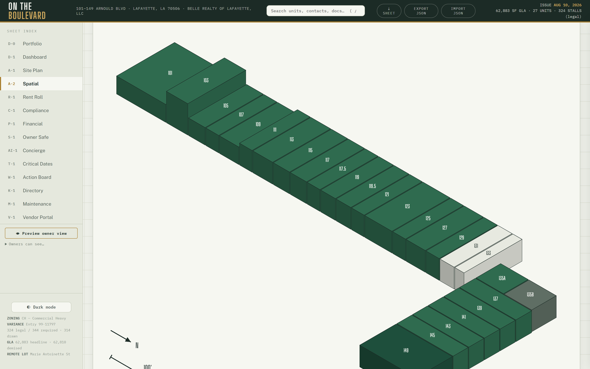
- Iso — SVG isometric, real CAD heights; ⇅ toggles true heights; ⤓ SVG exports a standalone file.
- ◧ 3D — orbitable massing; 🏗 Mesh swaps in the photogrammetry mesh.
- 🛰 Satellite — frozen basemap with georeferenced footprints, unit labels, asset pins; opens plan-oriented (Marie Antoinette top).
- 🎥 Reality — photoreal drone splat; ▦ toggles unit overlays; click a storefront → drawer. All lenses share the same selection — pick a unit in one, it's selected in all.
3.5 R-1 Rent Roll
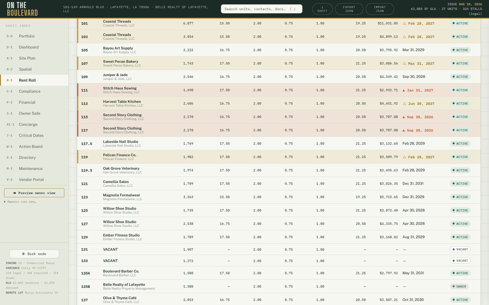
11 sortable columns; any bare monthly amount is TOTAL rent (base + additional). The PSF breakdown chart is the only place component economics (Base · CAM · Tax · Ins) appear — by design. ⤓ SHEET prints the owner one-pager: guaranteed one page (the layout measures itself and shrinks to fit), with expiry flags — ▲ brick ≤6 months, △ amber 6–12 months — and a legend in the stamp.
3.6 P-1 Financial
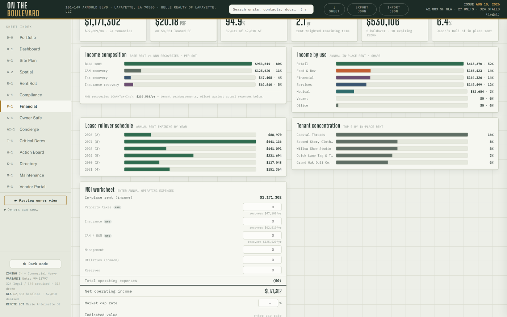
Income composition (bars + a composition donut beside the Base · CAM · Tax ·
Ins breakdown), rollover, and concentration charts; the NOI worksheet
(enter opex → NOI → cap-rate value) now opens with a revenue → NOI
waterfall (gross potential rent + vacancy are labeled ESTIMATES at the
effective PSF; expense steps are your worksheet lines only) and a cap-rate
sensitivity table ±100 bp in 25 bp steps around the entered rate (or the
flagged 8.50% appraisal reference when blank — never stored);
Collections & aging (month collected-vs-charged, collections history bars,
and per-unit FIFO aging from the ledger); Tenant health — five tiles plus
a worst-first list with OK / Watch / At-risk chips and a "How this score is
calculated" fold (score model 60/25/15; rows open the drawer; hosted only);
and the CAM reconciliation card — year picker, prior-year opex worksheet,
per-tenant caps from the lease abstracts (src/data/recovery-terms.json),
derived occupancy gross-up, and a per-row ⤓ Statement that prints the
tenant's annual reconciliation with the PSF breakdown, cap line and
methodology. Suites with unknown PSF print "Not determinable" rather than a
guess. The Excel proforma (npm run proforma) is the owner-overridable model
for underwriting conversations.
3.7 C-1 Compliance
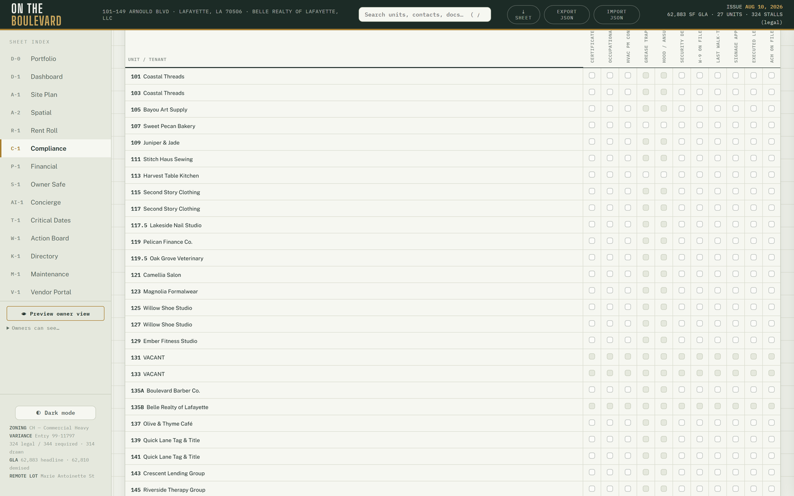
A Document coverage card sits above the matrix: per occupied suite — Lease · COI · COI expires · other documents — with filter chips and five summary counts. Evidence = a file on the suite's document records OR a matrix "On file"; a matrix Flag is a gap. Then the 11×27 matrix. Click a cell to cycle unknown → ok → flag → n/a (food-service-only fields apply only where relevant). Every flip is recorded — who, when, from→to — and ⏱ History shows the trail. You cannot corrupt this history; corrections are new flips. Edits sync live between devices — flip a cell on your phone and it flips on the desktop without a reload.
3.8 T-1 Critical Dates
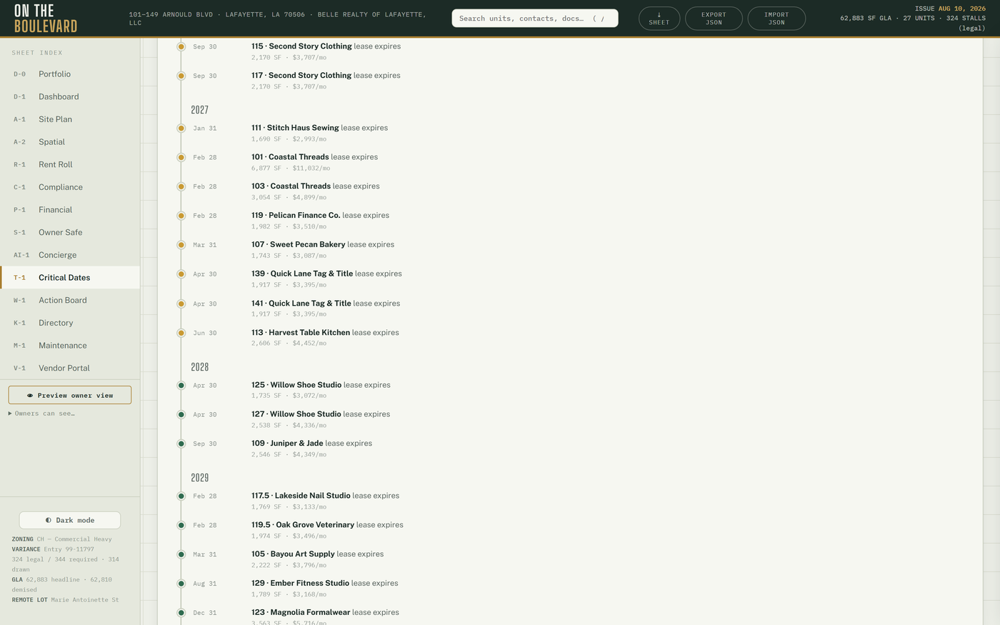
Three derived views — nothing to maintain:
- Lease expiry timeline — a four-year Gantt with a today line and bucket
cards (past end · <90 d · 90–180 d · >180 d · term unresolved). Suites whose
lease end is unresolved in the September 2026 lease review list under
"term unresolved" with their review label — BY DESIGN, never guessed.
Row click → drawer.
- Renewal pipeline — option terms transcribed from the executed leases
(src/data/renewal-options.json, reference only; every notice = 60 days).
Groups: Notice window · Deadline passed · Option available · Term
unresolved. "Open suite" → drawer.
- Instrument + governance deadlines — the JD Bank servitude end, the
insurance renewals, the premium-finance maturity, and every S-1 governance
item with a date, on the same timeline as the leases.
3.9 W-1 Action Board
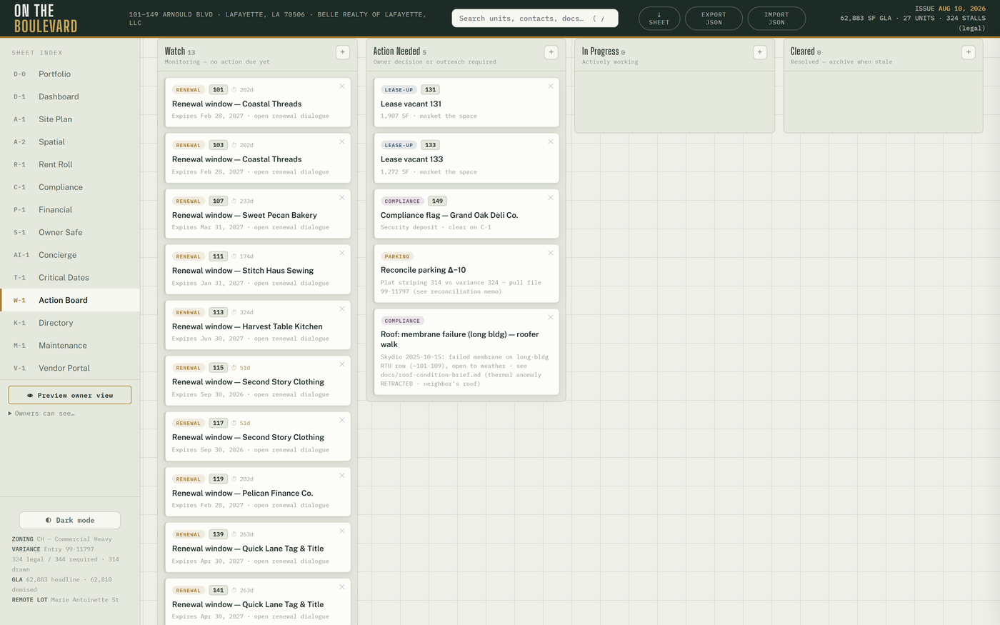
See Part II. A leasing pipeline strip over the deals table (inquiry →
tour → proposal → signed; voice and web leads land here on their own) sits
above the lanes. Card types include seeded facts (holdover, renewal, vacancy,
compliance flag, covenant) and live work-order cards (mr: prefixed).
Overrides (lane moves, dismissals) persist; the seed recomputes every render,
so a dismissed card returns only if the underlying fact returns.
3.10 M-1 Maintenance (operator face)
- Queue: every request with status, age, unit, photos.
- Assign: pick a vendor from the service roster → the vendor sees it in V-1 immediately.
- Status flips and notes are append-only events.
- Tenant logins: the roster editor (email ↔ unit) controls who may sign in as a tenant. Add email + unit; they magic-link in like everyone else.
- File on behalf: log a phone-in request yourself.
- Aging alarm: unassigned requests older than 2 days (1 for emergencies) open a manager thread automatically. Tenant-side view: §4.3.
3.11 The Ledger (drawer → Ledger)
- Balance headline + last entries with running balance.
- ⤓ Statement — a branded, printable tenant statement (owner-visible).
- Prior payments — 13 months of payment history with status-truth lateness (the July 2026 rows imported from Asset Command were bulk-entered; never trust their paid-at dates).
- Lease abstract (operator-only panel) — the abstracted terms, escalation steps and option terms for the suite, beside the ledger.
- Monthly rent charges post themselves (idempotently) on the 1st, since August 2026.
- ACH payments post themselves. Each unit has a reusable Stripe payment
link (ACH only; roster with URLs:
docs/stripe-payment-links-2026-08.md, copy on Drive). You send the link through your own channel — the app sends nothing. When the payment settles (ACH takes days), the unit's ledger gains anach:<payment-intent-id>entry automatically. A payment that can't be matched to a unit, or that fails, opens a manager thread in AI-1 (ach-unmapped:/ach-fail:) instead of landing silently. - "Payment received" records an out-of-band payment by hand.
- Add charge / credit / adjustment / NSF / write-off as needed.
- Void = ✕ on an entry → creates a reversing entry (nothing is deleted).
- Late-fee chips: past the 5-day grace, a suggestion chip appears ($100 + $25/day, the standard schedule). It posts only when you confirm. If a lease carries different late terms, flag it — policy goes per-unit.
- Amount changes: re-run
tools/stripe-payment-links.mjsfor that unit and retire the old link in the Stripe dashboard.
3.12 The E-Sign panel (drawer → E-Sign)
- Create a request (optionally attach a document for review).
- Copy link / Copy message — the app sends nothing; you deliver the link through your own channel (text/email). This is deliberate.
- The signer opens a plain, branded page — no login needed — reviews, and signs or declines (E-SIGN/LA-UETA consent language included).
- You see the live status (sent → viewed → signed/declined/expired), can re-token (invalidate + reissue) or cancel, and get a signed receipt. Tokens are single-lifecycle: double-signing or declining after signing is rejected by the database itself.
3.13 V-1 Vendor Portal (operator face)
- Roster (service vendors first, green "portal" tag = they can sign in).
- Per-vendor private folder: upload / open / delete, all audited.
- COI tracking: set expiry + note per vendor → badge auto-classifies (expired / ≤30d / ≤60d / ok; missing is flagged for service vendors).
- 🤖 Parse cert: drop an ACORD PDF → AI pre-fills carrier, limits, expiry, and a normalized note → review → Save COI. Always review before saving.
- Assigned work orders appear on the vendor's face automatically (§4.2).
- Inviting a vendor = telling them to magic-link in with their roster email. Nothing else to configure.
- Policy: COI / W-9 / license are verified at payment, not dispatch.
3.14 K-1 Directory
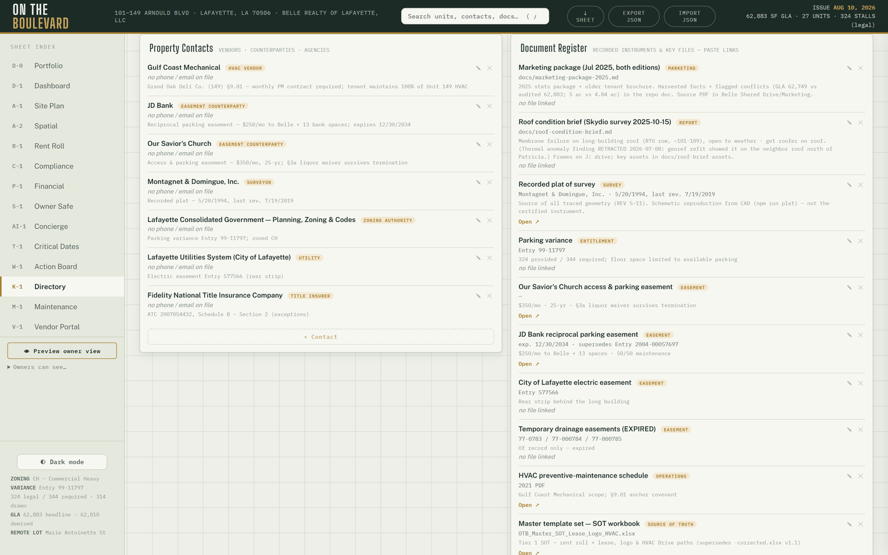
Property contacts (including the Property lines block — the tenant and
leasing numbers — and the insurance contacts: agent, brokers, claims lines),
the document register, and the site-imagery library. Register rows carry
counterparty · amount · effective · matures · status · risk besides the
file (📎 attach → the row's link becomes an "Open 📎" that always serves a
fresh secure URL); an expiring strip at the top lists what lapses next.
The pylon sign renders as a native SVG elevation next to the tenant
roster — hover links panel ↔ row, click → drawer; installed-but-unlisted
faces draw brick-dashed.
3.15 S-1 Owner Safe
Opens with Property records: a Risk register (worst-first) and a
Renewal & maturity radar (soonest-first) derived from the document
register — today that is the 2026–27 insurance program as bound (property ·
BOP liability + umbrella · workers' compensation, all renewing 2027-05-15, the
premium-finance agreement maturing 2027-03-15), the loan maturity, the lender
title policy and the recorded instruments. Abstract of the bound policies:
docs/insurance-program-2026-27.md. Then the Governance block (items with
deadlines feed T-1), ⤓ Board report (quarterly, assembled from the stored
owner briefs), and the category folders (Proforma / Leases / Tax / Insurance /
Banking / Other). Upload and open as the operator; owners read-only;
vendors/tenants sealed out at the database layer. Recent access
(operator-only) shows every view, upload, and delete with who and when.
3.16 AI-1 Agent Desk
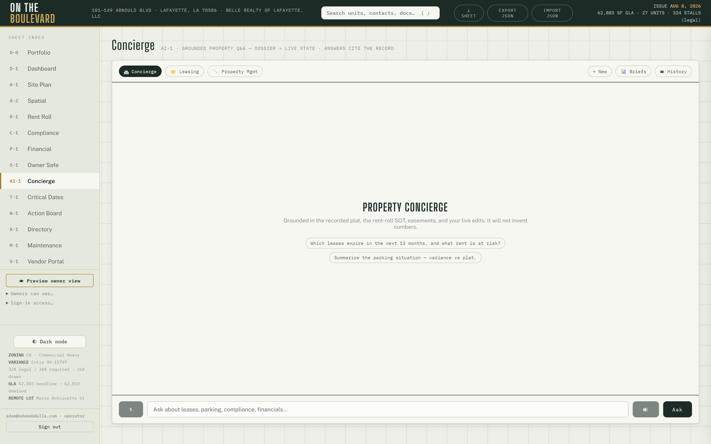
Three personas — 🏛 Concierge (property Q&A), 🤝 Leasing, 🔧 Property Manager — all grounded in the property dossier + live state. - Conversations persist and resume after reload; 🗂 History reopens any thread; ＋ New starts fresh. - 🎙 mic input and 🔊 spoken replies (Chrome/Edge). - Numbers are guardrailed: once a calculation is involved, every figure in the reply must trace to the deterministic engines or the reply is replaced with the engines' own summary. Ask the leasing agent things like "compare retaining at $17 vs replacing at $20 with 3 months free and $10 TI, 5-yr term, 1,917 SF, 7.5% cap" — or the manager "should I spend $45K on an RTU replacement with a $120K reserve, $30K/yr contributions, installed 2008, 15-yr life?" - 📊 Briefs — the monthly owner-brief archive; Open 🔒 renders any month. - 📦 Lead SMS (leasing persona): copies a ready-to-send text with the public leasing one-pager (otb.cypresscommand.com/leasing.html) and the leasing line number. You paste and send it — the app sends nothing. - Lease packages (operator-only): ask 🤝 Leasing to assemble a proposal; it collects terms conversationally, then generates a branded DRAFT proposal (and optionally the internal owner summary) as a card with Open 🔒 and ✉ Email (pre-filled mailto — you send it; it never auto-sends). Every generated document is DRAFT-stamped, subject to legal review.
3.17 The voice lines (LIVE)
- Tenant line (337) 273-0384: 24/7; triages per the SOP (emergencies = leak / electrical / break-in / sewer → dispatch + notify after-hours, never wakes you for permission); files real work orders into M-1; never discusses eviction timelines.
- Leasing line (337) 270-7044: takes name + number, quotes the approved
rate range only, screens against exclusive-use conflicts, books tour slots
(18h lead, Tue/Thu defaults; double-booking is impossible). Truthful
booking is enforced: the agent cannot claim a tour is booked unless the
booking tool actually succeeded; an unbacked claim is corrected or replaced
with an honest fallback, and a leasing call that ends without a booking
opens a
voice-lead:manager thread within hours so no lead drops. - Both greetings end "This call may be recorded." Every call is recorded at Twilio (once the Twilio account variables are set in Vercel), summarized the moment it ends (intent · urgency · unit · caller · callback · follow-up — nothing invented; hang-ups still record), written to L-1 as a call card with the Caller/Agent turns and ▶ Play recording, mirrored as a transcript thread in AI-1 History, and e-mailed to the owners when a mail key is configured. Emergencies open a manager thread on their own.
- The leasing line can send the leasing package by e-mail (and by text once A2P messaging is approved): the caller's request creates a deal row and the agent may only claim the legs that actually went out.
- Calls that end before the summary lands are swept by the daily cron (≥20 minutes unfinalized) so nothing is lost.
- Go-live steps + secret rotation drill:
docs/a3-voice-runbook.md; call records:docs/voice-call-records-runbook-2026-09-18.md.
3.18 B-1 Marketing
Five blocks, every one generated from the source of truth on the fly — a
flyer can never disagree with the rent roll, and rates are never printed:
1. Availability flyers — one printable flyer per vacant suite.
2. Center overview — stats · logo wall · site plan · availability.
3. Tenant cards — 1080-square co-marketing card per tenant.
4. Photo library — the assets bucket by suite; the operator picks the
hero image per suite and the pick persists (marketing layer).
5. 360° tour media — panoramas + hero stills uploaded to the PUBLIC
tour bucket; Publish manifest refreshes what the /tour microsite
shows. Insta360 export settings and the upload steps:
docs/marketing-b1-and-tour-2026-09-18.md.
Every output opens as a page with Print / Save PDF. The pylon sign block
shows the sign, its roster and "tenants without a face" per tenant. QR codes
for the leasing page and the tour live in public/qr/.
3.19 L-1 Comm Log
The cross-channel correspondence sheet. Filter by channel (note / e-mail / letter / meeting / SMS / voice / web) or unit, search, expand an entry, hand-log new correspondence, delete stale rows. Voice rows (§3.17) carry intent and urgency chips, a needs-attention dot, the summary, outcome links (work order · tour · lead · package), ▶ Play recording, the Caller/Agent turns, and ✓ Mark handled. The "Calls · 7 days" strip and the attention filter are the morning triage (Part II). Web tour requests from /tour land here too. Owners see the log read-only, including every call's summary, transcript and recording; tenants and vendors never see this sheet.
3.20 N-1 Matters & Planning
Long-running property affairs as status-filtered cards: kind (lease negotiation, claim, permit, dispute, project, general), status, deadlines, correspondence and file attachments. Operator: open a matter, edit fields inline, log meeting notes (they mirror into L-1), attach documents (they ride the documents bucket), close or reopen. Deadlines feed T-1. Owners read the cards and open attachments but never attach.
3.21 O-1 Operations
The procedures (SOP) library — categories → procedures → steps, with due-today / overdue / streak state. Browse, expand a procedure, ✓ Complete with notes and minutes (it closes the oldest open occurrence), author new content (add or edit categories, procedures, steps; deactivate), clear stale occurrences. The daily cron materializes each scheduled procedure's current occurrence and opens ONE "SOPs overdue" digest thread in AI-1 keyed by the newest lapse (a static backlog never re-fires). Owners read-only; tenants and vendors never see O-1.
3.22 The public /tour microsite
otb.cypresscommand.com/tour needs no sign-in: a 360° viewer per suite when
panoramas have been published from B-1, otherwise the plat, the numbers and
Call / Text-to-tour. The Request a tour form writes a web lead (deal row +
L-1 note, capped per day), opens a manager thread in AI-1, and e-mails the
owners when mail is configured. The leasing one-pager stays at
/leasing.html.
Part IV — Counterparty guides
4.1 Owners
Sign in with your authorized email (the owner list is fixed by the operator — §6.1). You see the sheets the operator has shared (dashboard, rent roll, financials, and the Safe are typical), read-only. The Comm Log, when shared, lets you listen to any recorded call and read its summary and transcript. The 📊 Briefs panel in AI-1 holds your monthly intelligence brief — every figure deterministic, archived permanently. You may ask the AI desk questions; its numbers are guardrailed the same as the operator's.
4.2 Vendors
Magic-link in with the email the operator has on file. You see one sheet: your own folder (your documents + "send a file to management"), your COI status with a renewal nudge, and your assigned work orders — open each to read notes and photos, add notes, and ✓ Mark complete when done.
4.3 Tenants
Magic-link in with the email your management added. You see M-1 for your unit only: file a maintenance request (describe the problem, attach photos), watch its status, and "Your account" — your current balance and recent ledger entries. Rent is paid through the payment link management sends you — one link per unit, reusable every month. Emergencies (water leak, electrical hazard, break-in, sewer): call the maintenance line rather than filing a ticket.
4.4 Document signers
You'll receive a link from management. It opens a simple page — no account, no app. Review the request (and the attached document if one is linked), then sign or decline. The signature is recorded with timestamp and consent language under the federal E-SIGN Act and Louisiana UETA.
Part V — Rhythms
5.1 Daily (mostly automatic)
- 11:00 UTC — proactive scan: renewals/holdovers/occupancy → AI threads; work-order aging; camera-pipeline heartbeat; rent-charge posting; unmatched-ACH threads; unbooked voice leads; UniFi outages; unfinalized voice calls swept into L-1; scheduled procedures materialized on O-1 and ONE "SOPs overdue" digest thread. The scan also stamps the Automation (cron) card on D-1 — if that card goes brick, every one of those safety nets is silent; treat it as urgent.
- 12:00 local + 23:45 local — camera frames classified + uploaded (hands-free; the sampler is watchdog-healed).
- You: the Part II walk — dashboard, board, AI history, maintenance queue.
5.2 Monthly
- 1st: Owner Intelligence Brief generates itself; rent charges post themselves. Skim the brief before the owner does.
- Send (or re-send) payment links through your channel; ACH payments post themselves as they settle; confirm or dismiss late-fee chips after the grace window.
- Documented property walk (per SOP); update C-1 flags as found — the history logs itself.
5.3 When a lease is signed / a fact changes (governed SOT update)
- Update the source of truth:
docs/lease-population-2026-09-10.mdand the suite'sleaseEvidenceinsrc/data/units.json(Tier 1 since the September 2026 lease review;docs/sot-2026-07/stays authoritative for suites the review does not name). Supersession rules:docs/sot-supersession-2026-09-11.md. - Apply the change to
src/data/units.json. Leave a leaseendBLANK when the signed documents do not resolve it — T-1 and W-1 then show "term unresolved" instead of a guessed date. No holdovers are assumed. npm run split-seed&&npm run concierge-context(the test suite fails if you forget — deliberately).npm test→ commit → deploy (§6.3) → verify live. Never trust an imported system's dates over signed paper; store stated-rent exceptions as exceptions — do not "fix" them to formula.
5.4 Periodic
- COI badges: chase at ≤60 days, escalate at ≤30 (§3.13).
- Semi-annual house HVAC PM (the anchor unit is excluded — its lease requires the tenant to maintain its own HVAC with the designated contractor).
- Move-out: solo walk + photos within 30 days; file to the unit's assets.
- Re-run marketing artifacts when availability changes (
npm run poster, leasing one-pager pertools/leasing-package.py).
Part VI — Administration & recovery
6.1 Granting and revoking access
- Owner: sidebar → "Sign-in access…" → type email → + Owner. Their first magic link lands them as owner. Anyone stuck in pending is listed there with one-click "make owner". Revoke = ✕ (removes pre-authorization; demoting an existing profile is a Supabase console step).
- Vendor: ensure their email is on the roster; tell them to sign in.
- Tenant: M-1 → Tenant logins → add email + unit. Remove the row to cut access.
- Owner sheet visibility: the "Owners can see…" panel controls which sheets owners get.
6.2 Quality gates (never skip)
node --check on changed modules · npm test (777) · npm run build ·
deploy · grep the prod bundle for the change · smoke the live URL.
Since 2026-09-11 every push to master deploys through
.github/workflows/deploy.yml (npm ci → npm test → vercel build/deploy
--prod); a failing test blocks the deploy. Verify by fetching the live page
and checking the assets/main-<hash>.js bundle name against the local build.
6.3 Deploying
Push to master (or merge a PR) — GitHub Actions deploys production. Manual
fallback from this machine:
npx vercel deploy --prod --yes --scope adams-projects-0c52918e
(.vercelignore governs uploads — the 16MB splat + 3MB mesh ride in
public/.) Never promote a Preview deployment: previews run against the
isolated Supabase branch and the build aborts if production secrets leak into
the Preview scope.
6.4 Backup & portability
- Topbar Export → full-state JSON. Take one before risky edits; Import restores.
- The repo is the authoritative system; all exports (dossier, buyer set,
posters) are disposable and regenerable. Every export also lands on
G:\My Drive\00 OTB\. - A scheduled task (
OTB-Repo-Backup, daily 03:00) bundles full git history to Drive. Committed-only — commit anything that matters. - Local preview without login: dev server on port 5199; move
.envaside temporarily — and restore it after. (Confidential rents do not render in that mode — by design.)
6.5 Secrets
Keys live only in Vercel env — never in chat, repo, or disk. Rotations are
scripted drills: tools/rotate-secret.mjs (shared cron secret),
tools/rotate-voice-secret.mjs (voice). One-shot key needs (e.g. the
restricted Stripe key used to mint payment links) follow the drop-use-delete
drill: key to a dotfile, tool consumes it, file deleted — never in chat.
Vercel rejects env values with trailing whitespace at deploy time — the
scripts handle this; when feeding a secret to a CLI, use cmd /c "… < file"
(PowerShell pipes append a newline).
6.6 The camera (C3) pipeline
Fully hands-free: sampler (5-min ticks, watchdog task self-heals it at logon + every 5 min) → midday 12:00 + nightly 23:45 classify + upload → app surfaces. If it goes quiet 36 hours, a manager thread opens on its own. After a machine reboot the watchdog relaunches the sampler; no manual step. Known conventions: capture day-directories are UTC-keyed; frames live outside the repo.
6.7 Known limits (deliberate v1 boundaries)
- E-sign, lease proposals, and payment links: the operator transmits links/documents; the app sends nothing outbound on its own.
- Voice: no SMS notify on dispatch, no live call transfer, no daily call cap (set a Twilio usage trigger); recordings and the leasing-package e-mail wait on the Twilio and mail keys in Vercel; the leasing package by text waits on A2P approval; settings edits via SQL until a UI lands.
- B-1 outputs and the /tour site never print a rate; the operator quotes rates in person or by the leasing line's approved range.
- Desktop-first; the phone experience is a responsive web app, not a native app.
- Onboarding a second property is operator-driven (see the onboarding manual); there is no self-serve signup.
Questions the manual doesn't answer: ask the 🏛 Concierge — it is grounded in the same governed data this manual describes.
Cypress Command Platform — Property Onboarding Manual
Version September 2026 · the Phase C-1 rail, funnel-proven by the C-2 live run Operator-driven by design — there is no self-serve signup. One intake file = one property.
This is the complete procedure for bringing a new property onto the platform: what to collect, how to build the intake file, how to run it (dry, then live), how to verify the result, and what the new property's people do next. It ends with the deliberate v1 fences and the teardown procedure.
1. What onboarding does
A successful run creates, in one all-or-nothing transaction:
- The organization (management company) — or reuses it by slug if it already exists, so a second property lands under the same org.
- The property — slug, name, address, timezone, plus a
factslist (label/value/source rows that dashboard-class cards derive from). - The property settings row — ledger start month, renewal horizon, occupancy floor, late-fee schedule, and a free-form SOP settings object.
- The authorized-email list — email + role rows. No user accounts are forged: each person becomes real the first time they magic-link in, and the membership lattice assigns their role automatically.
The moment it lands, the property appears as a card on D-0 Portfolio, and — at two or more visible properties — the property switcher appears in the sidebar for every org-wide member. Nothing else changes: rent posting and API surfaces keep serving the default property until the new one is deliberately activated.

2. What to collect before you start (intake checklist)
Org (management company)
- Slug (lowercase, hyphens — permanent, choose once) and display name.
- Brand kit if available (palette / wordmark / contact block) — may start
empty {}.
Property
- Slug (permanent), display name, street address, IANA timezone
(e.g. America/Chicago).
- Facts worth surfacing: GLA, unit count, parking (with source citations —
"rent roll 2026-08", "site plan"…). Facts are display rows, not schema;
add what the owner will want to see.
Settings
- ledger_start_ym (YYYY-MM) — the first month rent charges will post.
Choose the first FULL month on the platform; historical balances are a
data-package concern, not an onboarding concern.
- renewal_horizon_days (default 180), occupancy_floor (default 0.85),
late-fee schedule (late_grace_days / late_flat / late_per_day).
- SOP answers (emergency policy, vendor rules …) — free jsonb under
settings.settings.
People
- Every email that should have access on day one, each tagged with a role:
operator (full control) or owner (read-only, operator-curated sheets).
Vendors and tenants are NOT onboarding rows — they come later through the
vendor roster and tenant-login editor inside the app.
3. Build the intake file
The easy way — the intake form (no technical knowledge needed)
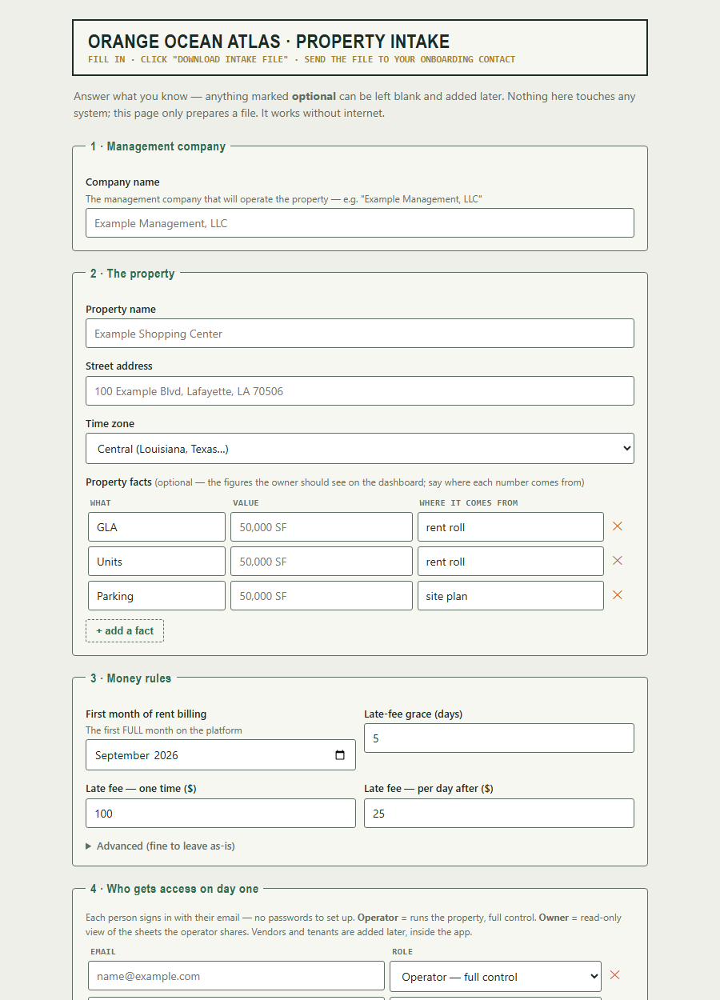
Send the new property's manager the intake form link —
https://otb.cypresscommand.com/manual/intake-form.html (or email them the
file itself, docs/phase-c/intake-form.html — it works offline too). They
answer plain-English questions — company name, property name and address,
first billing month, late-fee schedule, who gets access — then click
⤓ Download intake file and send back the resulting
intake-<property>.json. The form checks its own answers as they go
(problems appear in plain English), auto-derives the permanent slugs from the
names, and cannot produce a file the validator would reject. It only prepares
the file — nothing is created until you run the rail in §4–5.
Anything they skip (facts, notes) you can add to the JSON afterward; their
free-text notes arrive under settings.settings.intake_notes for you to
translate into real SOP settings.
The technical way — edit the JSON directly
Copy the template and fill it in:
docs/phase-c/onboarding-intake-template.json → docs/phase-c/intake-<slug>.json
{
"org": {
"slug": "example-mgmt",
"name": "Example Management, LLC",
"brand": {}
},
"property": {
"slug": "example-center",
"name": "Example Shopping Center",
"address": "100 Example Blvd, Lafayette, LA 70506",
"tz": "America/Chicago",
"facts": [
{ "label": "GLA", "value": "50,000 SF", "source": "rent roll 2026-08" },
{ "label": "Parking", "value": "250 spaces", "source": "site plan" }
]
},
"settings": {
"ledger_start_ym": "2026-09",
"renewal_horizon_days": 180,
"occupancy_floor": 0.85,
"late_grace_days": 5,
"late_flat": 100,
"late_per_day": 25,
"settings": {}
},
"authorized": [
{ "email": "operator@example.com", "role": "operator" },
{ "email": "owner@example.com", "role": "owner" }
]
}
Rules the validator enforces (the tool refuses to touch the database on any
error): slug shape, timezone shape, YYYY-MM ledger start, role whitelist,
fact and authorized row shapes. Reusing an existing org slug is legitimate
(that is how a portfolio grows); reusing an existing property slug under
the same org is refused.
4. Dry-run
node tools/onboard-property.mjs docs/phase-c/intake-<slug>.json --dry-run
Validates the file and prints the full plan — org reuse vs create, the property row, settings, and authorized emails — without any database contact. Fix anything wrong and re-run until the plan reads exactly like the deal.
5. Live run
The live run uses the standard CRON_SECRET pull-load-delete drill (the secret is pulled from Vercel env for the moment of use — never typed into chat, never left on disk):
node tools/onboard-property.mjs docs/phase-c/intake-<slug>.json
The RPC is all-or-nothing: any failure rolls the entire intake back. A
duplicate property raises (P0001) and clobbers nothing — this is the
protection, not an error to work around.
6. Verify (two minutes)
In the app (as an org-wide member): 1. D-0 Portfolio shows the new property's card ($0 A/R, 0 work orders — correct for an empty property). 2. The property switcher now renders in the sidebar (it appears only at two or more visible properties). 3. Switch to the new property — every sheet boots empty. That is correct: a fresh property has no data package (§8).
In SQL (Supabase console), if you want belt-and-suspenders:
select p.slug, p.name, p.created_at, s.ledger_start_ym
from properties p join property_settings s on s.property_id = p.id
order by p.created_at;
select email, role from authorized_emails order by email;
Financial isolation: the rent cron posts only to the default property;
api/* still resolves the flagship. A newly onboarded property cannot create
financial side effects until it is deliberately given a data package and
activated.
7. First sign-ins
Send each authorized person to the login page — they enter their email and click the magic link; their membership row and role materialize on first sign-in. Nothing to provision, no passwords to distribute.
- The new operator lands with full control of their (empty) property.
- Owners land read-only on the operator-curated sheet set.
- Anyone not on the authorized list lands on the pending screen with no data access — promote or ignore from the sidebar's access panel.
8. The v1 fences (deliberate — do not fight them)
- No data package. Onboarding creates the container, not the contents: units, geometry, rent roll, and seeds are the site-plan-tier premium step (Phase C data-package pipeline). Until that lands for the new property, the 17 property sheets remain bound to the flagship's bundled data — the new property renders correctly on D-0 and boots its own sheets empty.
- Known residual while switched: manual edits made while you are actively switched INTO a data-less property will sync to that property. Don't do data entry on a property that hasn't had its package built.
- No storage folder prefixes yet — the decision is deferred until the first real pilot's document volume makes the shape obvious.
- No self-serve UI. Governed, operator-driven onboarding is the deliberate wedge; a UI can wrap this rail later without changing it.
9. Teardown (removing a property)
The C-2 proof property was created and torn down cleanly with this exact pattern. Order matters (children first), and this is irreversible — read twice, run once:
-- any typed-layer/child rows first (comp_state, board_state, …), then:
delete from property_settings
where property_id = (select id from properties where slug = '<slug>');
delete from properties where slug = '<slug>';
Then verify: D-0 shows one card fewer; the switcher disappears if only one property remains; the flagship's data is untouched.
10. Troubleshooting
| Symptom | Meaning | Do |
|---|---|---|
| Validator errors on dry-run | Intake file shape is wrong | Fix the listed fields; nothing was sent |
P0001 duplicate raise on live run |
Property slug already exists under that org | This is the no-clobber guard. Pick a new slug, or tear down the old property first |
| New property card missing on D-0 | Viewer is not an org-wide member | Check the viewer's membership; org-wide members see all properties |
| Switcher not visible | Only one property is visible to you | Correct at one property — it renders at two or more |
| Sheets look like the flagship after switching | You are looking at bundled flagship data | Expected until the property's own data package exists (§8) |
| Someone stuck on "pending" | Email wasn't in authorized, or typo'd |
Add/fix via the sidebar access panel; they re-click a fresh magic link |
Provenance: intake contract and rail design docs/phase-c/01-onboarding-design.md;
validation seam src/lib/onboard.js; RPC migration onboarding_rpc; driver
tools/onboard-property.mjs. The rail was smoke-tested under rollback on
prod and funnel-proven live by the C-2 run (property created via the rail,
verified, then torn down).